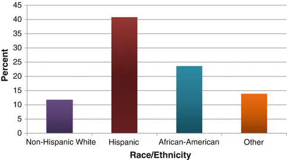

Adequate access to health care services, including preventive services and treatment for illnesses, is critical to achieving positive health outcomes. Two major limitations of adequate access to care are a lack of health insurance coverage and a shortage of health care providers in certain areas [1, 2].
Lack of Health Insurance
Lack of health insurance coverage is a significant barrier to seeking and receiving health care [2, 3]. Nationwide, Hispanics and young adults aged 18–24 are more likely to be uninsured than other demographic groups [1, 4].
Using Texas Behavioral Risk Factor Surveillance System (BRFSS) survey data, an estimated 30 % of South Texas adult residents were uninsured during 2007–2010. South Texas had a higher percentage of uninsured residents than the rest of Texas (23 %). Both South Texas and the rest of Texas had a higher percentage of uninsured residents than the nationwide BRFSS estimate of about 15 % (Fig. 3.1). During 2007–2010, the estimated South Texas uninsured rate was almost twice as high as the national rate.
Fig. 3.1
Estimated percent of the adult population (18+) with no health insurance by location, 2007–2010. Source: Texas Behavioral Risk Factor Surveillance System Combined Year Dataset, Statewide BRFSS Survey, 2007–2010
In South Texas during 2007–2010, Hispanics and African-Americans had higher percentages of uninsured individuals than did non-Hispanic whites. South Texas Hispanics had the highest uninsured rate (40.8 %) of all race/ethnic groups. The percentage of Hispanics with no health care was almost 3.5 times higher than for non-Hispanic whites, and twice as high for African Americans (Fig. 3.2).

Fig. 3.2
Estimated percent of adult (18+) South Texas population with no health insurance by race/ethnicity, 2007–2010. Source: Texas Behavioral Risk Factor Surveillance System Combined Year Dataset, Statewide BRFSS Survey, 2007–2010
In 2007–2010, estimates indicate that half of adults aged 18–29 in South Texas had no health insurance (Fig. 3.3), the highest rate among all age groups. The percentage of individuals with no health insurance dropped steadily with age (Fig. 3.3).
Fig. 3.3
Estimated percent of the adult (18+) South Texas population with no health insurance by age group, 2007–2010. Source: Texas Behavioral Risk Factor Surveillance System Combined Year Dataset, Statewide BRFSS Survey, 2007–2010
Health Professional Shortage Areas
Another major barrier to receiving adequate health care is a shortage of health care providers in certain locations. Twenty-four of the 38 South Texas counties are currently designated by the U.S. Department of Health and Human Services as (whole county service area) primary care health professional shortage areas (HPSAs) [5].
The counties designated as primary care HPSAs in South Texas are shown in Fig. 3.4. The HPSAs in this list are mostly nonmetropolitan counties. However, a few metropolitan counties (such as Atascosa, Bandera, Medina, and Wilson) are designated as HPSAs, so a shortage of health professionals is also a problem in some South Texas metropolitan areas [5].
Fig. 3.4
Map of designated whole county primary care health professional shortage areas in South Texas, 2010
References
1.
Zuvekas SH, Weinick RM. Changes in access to care, 1977–1996: the role of health insurance. Health Serv Res. 1999;34:271–9.PubMed
2.
Healthy People 2020. Access to health services. 2012. http://1.usa.gov/f8uTOp. Accessed June 2012.
3.
Weinick RM, Zuvekas SH, Drilea S. Research findings #3: access to health care – sources and barriers, 1996. Agency for Healthcare Research and Quality. 2006. http://www.meps.ahrq.gov/mepsweb/data_files/publications/rf3/rf3.shtml. Accessed 2007 Apr 2007.
4.
U.S. Department of Health and Human Services. Overview of the uninsured in the United States: a summary of the 2011 current population survey. 2011. http://aspe.hhs.gov/health/reports/2011/CPSHealthIns2011/ib.shtml. Accessed June 2012.
5.
UU.S. Department of Health and Human Services, Health Resources and Services Administration. Find shortage areas: APSA by state and county. 2012. http://hpsafind.hrsa.gov/HPSASearch.aspx.AccessedMay2012. Accessed June 2012.